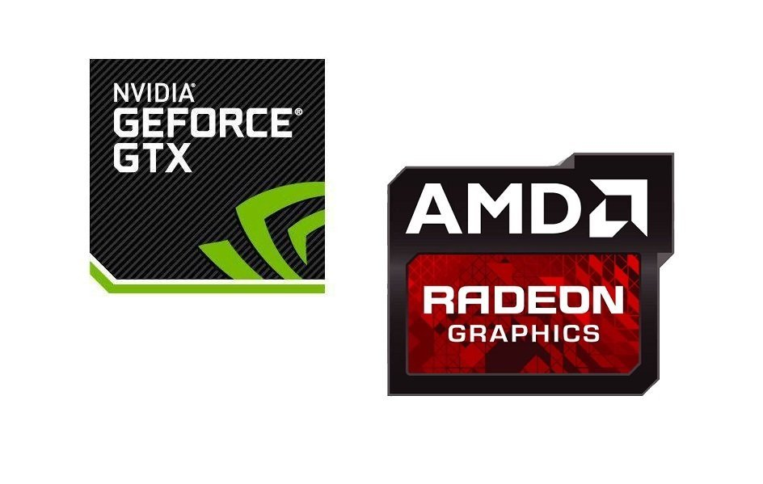

Видеокарта
Выбор видеокарты примерно схож с выбором процессора. На рынке присутствуют две компании производящие полноценные видеокарты. Нам необходимо опредилится для чего вы собираете компьютер, после уже выбирать подходящую вам модель.
На данный момент наиболее дешевыми картами считаются карты от AMD
Для ее подбора следует смотреть на следующие характеристики, а именно это объем видеопамяти, версия шины, есть ли дополнительное питание для системы охлаждения потому как это будет влиять на подбор блока питания, на производительно также окажут влияния такие характеристики как частота ядра, кол - во шейдеров блоко тектур, шина памяти и пропускная способность - чем выше все эти параметры тем большую производительность покажет видеокарта.Следует обратить внимание на систему охлаждения так как она сыграет важную роль в продолжительности жизни видеокарты.